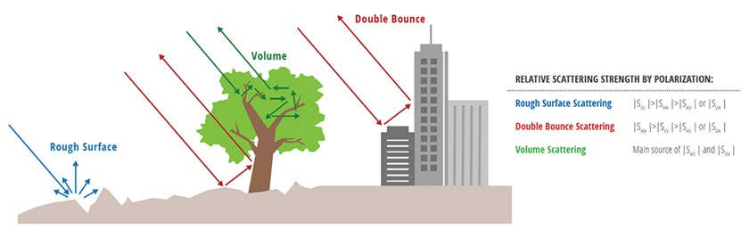
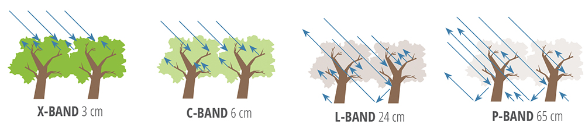
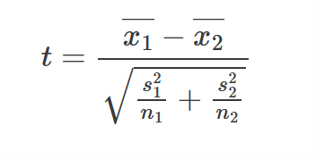

9 Week 9 SAR
9.1 Summary
9.1.1 Synthetic Aperture Radar(SAR)
Synthetic Aperture Radar (SAR) is an active radar system commonly used for Earth observation and remote sensing. It operates by transmitting and receiving microwave signals, utilizing the interaction between radar waves and the Earth’s surface to gather information about surface features. Compared to traditional remote sensing techniques, there are some differences :
Active sensors
Have surface texture data
See through weather and clouds
Different wavelengths - different applications
The principle of SAR involves a platform (typically an aircraft or satellite) moving along a specific direction and emitting radar waves towards the ground. By recording phase information from different positions, the SAR system can synthesize a long virtual antenna, achieving high-resolution imaging.
Why is the water black in SAR image?
Calm water (and smooth surfaces) reflects the radar pulses away from the sensor (NASA). Basically, Water do not reflect radar signals directly according to transmitted angle, I mean water usually reflects it off elsewhere.
Antenna in SAR:
An antenna is a device used to transmit or receive electromagnetic waves.
RADAR aperture = the antenna
Longer antenna = narrower beam and a higher resolution
“synthetic” aperture = “synthesize a long antenna by combining signals, or echoes, received by the radar as it moves along a flight track”
Phase in SAR:
A SAR signal has both amplitude (backscatter) and phase data
- Location of wave on the cycle when it comes back to the sensor
“Phase change means ground move”
- Interferometric synthetic aperture radar (InSAR) techniques combine two or more SAR images over the same region to reveal surface topography or surface motion
9.1.2 SAR polarization
Polarization refers to the orientation of the electric field vector of the radar waves transmitted and received by the SAR system. SAR systems can transmit and receive radar waves in different polarization states:
HH (Horizontal-Horizontal): In this polarization state, both the transmitted and received radar waves have their electric field vectors oriented horizontally, parallel to the Earth’s surface.
- double-bounce scattering: stemmy vegetation–trees; manmade structures: buildings
VV (Vertical-Vertical): In this polarization state, both the transmitted and received radar waves have their electric field vectors oriented vertically, perpendicular to the Earth’s surface.
- rough surface scattering: bare ground, water
HV (Horizontal-Vertical)/VH (Vertical-Horizontal):
- Volume scattering: vegetation; high-penetration soil: sand, dry porous soils.

{kind=link}
9.1.3 Common Bands:
| Band | Frequency (GHz) | Wavelength (cm) | Typical Application |
|---|---|---|---|
| X | 8-12 | 3.8-2.4 | High resolution SAR (urban monitoring,; ice and snow, little penetration into vegetation cover; fast coherence decay in vegetated areas) |
| C | 4-8 | 7.5-3.8 | SAR Workhorse (global mapping; change detection; monitoring of areas with low to moderate penetration; higher coherence); ice, ocean maritime navigation |
| X | 2-4 | 15-7.5 | Little but increasing use for SAR-based Earth observation; agriculture monitoring (NISAR will carry an S-band channel; expends C-band applications to higher vegetation density) |
| L | 1-2 | 30-15 | Medium resolution SAR (geophysical monitoring; biomass and vegetation mapping; high penetration, InSAR) |

9.2 Application
9.2.1 T-test
In Change Detection:
In order to detect change between two images, the basic strategy would be to take an image taken before an event and subtract it from an image taken after.
It is no denying that Cities are usually in a state of change. Construction, demolition and even the growth of vegetation can be detected by the algorithm, which means the change may caused by different reasons. Therefore, we need to distinguish between areas that have changed because of relevant events and ones that have changed for other irrelevent reasons. We can use a t-test to determine whether the change in means is significant using the mean and the standard deviations of two sets of numbers.
In this case, the two samples are the pre- and post-event images. The t-test is applied to each pixel in the image, allowing us to determine whether the change is statistically significant.

This procedure gives us a number called a t-value, which is a measure of how many standard deviations the difference between the two means is.
Overall, if the t-value is greater than 2, then the difference between the two means is significant. If the t-value is less than 2, then the difference is not significant. (2 is a fairly abitrary cutoff, but it’s the most commonly used one since it corresponds to the 95% confidence interval)
t-value > 2; the change is significant.
t-value < 2; the change is not significant.
9.2.2 Sentinel-1 SAR
Sentinel-1 Synthetic Aperture Radar (SAR) imagery “SAR instruments send pulses of microwaves toward Earth’s surface and listen for the reflections of those waves. The radar waves can penetrate cloud cover, vegetation, and the dark of night to detect changes that might not show up in visible light imagery. When Earth’s crust moves due to an earthquake, when dry land is suddenly covered by flood water, or when buildings have been damaged or toppled, the amplitude and phase of radar wave reflections changes in those areas and indicates to the satellite that something on the ground has changed.”
SENTINEL-1 is an imaging radar mission providing continuous all-weather, day-and-night imagery at C-band. The SENTINEL-1 constellation provides high reliability, improved revisit time, geographical coverage and rapid data dissemination to support operational applications in the priority areas of marine monitoring, land monitoring and emergency services.
Source: Sentinel Online.
Data in GEE：
Sentinel-1 SAR GRD: C-band Synthetic Aperture Radar Ground Range Detected, log scaling.
Dataset Availability: 2014-10-03T00:00:00Z–2024-03-14T16:05:01.
Description: The Sentinel-1 mission provides data from a dual-polarization C-band Synthetic Aperture Radar (SAR) instrument at 5.405GHz (C band). This collection includes the S1 Ground Range Detected (GRD) scenes, processed using the Sentinel-1 Toolbox to generate a calibrated, ortho-corrected product. The collection is updated daily. New assets are ingested within two days after they become available.
Bands:
VV: single co-polarization, vertical transmit/vertical receive
HH: single co-polarization, horizontal transmit/horizontal receive
VV + VH: dual-band cross-polarization, vertical transmit/horizontal receive
HH + HV: dual-band cross-polarization, horizontal transmit/vertical receive
Each scene also includes an additional ‘angle’ band that contains the approximate incidence angle from ellipsoid in degrees at every point. This band is generated by interpolating the ‘incidenceAngle’ property of the ‘geolocationGridPoint’ gridded field provided with each asset.
Data Source: Google Earth Engine.
9.2.3 SAR for crop yield estimation
Nikolaos-Christos Vavlas (2020) considered that the field-specific SAR time series can be used to characterise growth and maturation periods and to estimate the performance of cereals. In more detail, the day of the year of the maximum VH/VV value was negatively correlated with yield (r = −0.56), and the duration of “full” vegetation was positively correlated with yield (r = 0.61).
In order to reduce the variability of SAR data, we may chose to use imagery from only the ascending satellite passing as images from the descending orbit were often affected by morning dew (Vavlas, N, 2020). Similar observations have been made in other studies, indicating greater certainty when using the ascending rather the descending phase of the satellite for predicting crop state variables in this area.
9.3 Reflection
In this week, I learn the knowledge of Synthetic Aperture Radar (SAR), which is a useful imaging technology used in various applications. It operates with different polarization bands, allowing for versatile data collection and analysis. In addition, Sentinel-1 SAR data is accessible in Google Earth Engine, which has a range of applications like using T-tests to do damage detection or applied to crop yield estimation.
9.3.1 New terms:
SAR = active sensor, see through clouds, records energy reflected back
InSAR = used for DEMs, converting phase different to relative height
DInSAR = changes between two images in time. Looking at movement of land (uplift or sinking) with topography removed (using a DEM)
Interferogram 干涉图